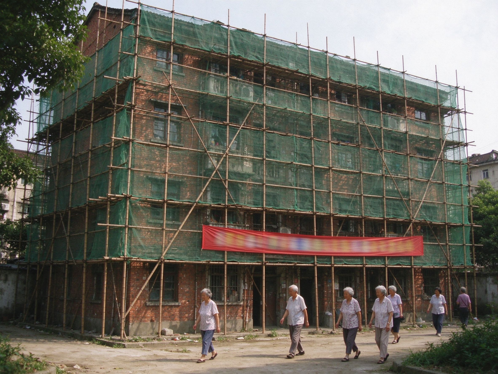
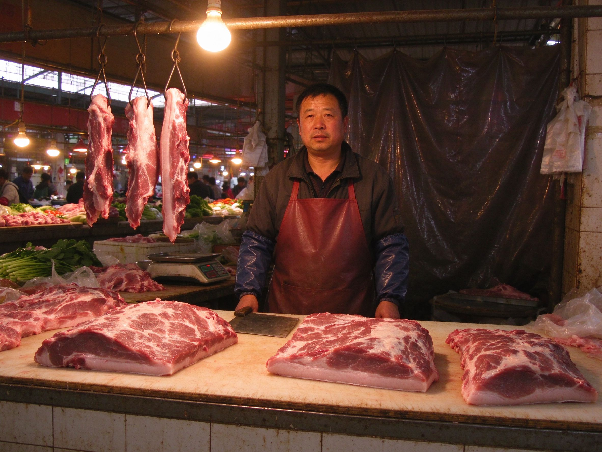

老小区改造让居民住得舒心 工人师傅正在粉刷居民楼外墙
本报讯 江洲路一带的老小区改造工程自今年三月开工以来，进展顺利。记者昨日在现场看到，几栋居民楼外搭着脚手架，墙面重新粉刷，下水管道也一并更换。家住3栋的王阿姨告诉记者："以前一下雨就积水，现在好了，夜里睡得都踏实。" 据改造办负责人介绍，本次改造涵盖外墙翻新、雨污分流、楼道照明更换等八项内容，预计九月底全部完工。施工期间给居民出行带来不便，敬请谅解。 菜市场猪肉价格本周小幅回落 惠民桥菜市场猪肉摊位前顾客络绎不绝
本报讯 记者从惠民桥菜市场了解到，本周五花肉零售价为每斤13块5，较上周回落了8毛钱。摊主老李说："天热了，进货的多，价钱自然就下来了。" 另据市商务局监测，本周我市蔬菜供应充足，黄瓜、西红柿价格平稳。 |
秋季开学报名工作本周末启动本报讯 我市2013年秋季中小学新生报名将于本周六、周日两天集中办理。教育局提醒家长，报名时请携带户口本、预防接种证及房产证明原件。实验小学咨询电话：0519-86223345。 另悉，今年我市初中阶段共招收新生1.2万人，市一中初中部继续面向全市摇号招生，中签结果8月25日公布。 台风外围影响我市 周末有阵雨本报讯 据市气象台预报，受今年第十号台风外围云系影响，本周六起我市转阴有阵雨，局部雨量中等，风力逐渐增大到四到五级。气象部门提醒市民妥善安置阳台物品，出行注意安全。 |
|
（救助名单公示期为7个工作日，接受社会监督。）
2013年度社区老年人免费体检名单（节选）
体检时间：8月20日—8月31日，凭身份证到社区卫生服务中心。
|
|
爸爸替你拿了全国一等奖。
奖
我的小猫花卷我家有一只白色的小猫，名字叫花卷。妈妈说它刚来我家的时候，只有我的书包那么大，现在已经胖得像一个花卷了，所以才叫这个名字。 花卷最喜欢趴在我写作业的桌子旁边睡觉。我一写作业，它就打呼噜，像个小马达。有一次我把铅笔盒碰到地上，它也不醒，只是甩一下尾巴。 我最喜欢给它喂小鱼干。它吃鱼干的时候会用两只前爪抱着，嚼得咔哧咔哧响，好像怕我抢它的一样。 我最羡慕大家能跑接力赛，我只能坐在台阶上数影子。要是我能跑，肯定比耗子还快！到时候我要抱着花卷一起跑，让它当我们班的拉拉队。 老师说我的作文写得有感情，还贴在了教室后面的墙上。花卷，你可要快点长大呀，我要把奖状拿给你看。 滨城实验小学 沈知栀（五年级三班） |
中缝启事
高价回收旧家电、报纸、废铜烂铁
电话：0519-86110472 上门拉货 配钥匙 | 修鞋 | 修伞
老巷口便民摊 价格实惠 搬家 | 开锁 | 疏通下水道
电话：0519-86331245 随叫随到 电脑维修 | 装系统 | 数据恢复
上门服务，电话：0519-86557821 空调加氟 | 热水器维修 | 回收旧家电
电话：0519-86229076
【寻猫启事】
2012年7月23日，于江滨小区附近丢失白色小猫一只，名"花卷"，戴着项圈。捡到请联系 13XXXXXX817，重谢！
专业静态网页制作、网站维护，
联系人：沈先生 电话：13XXXXXX817
上门喂猫、宠物寄养，
联系人：沈先生 电话：13XXXXXX817 |
运动会的接力赛，我们班拿到了第二名。
去年这个时候，栀栀还跟我在操场上数影子。她说她最想跑接力，说跑起来风从耳朵旁边过去，一定特别凉快。我们说好，今年两个人一起报名，她跑最后一棒，我把接力棒稳稳地交到她手里。
可是后来她住院了，就没能来。今天跑最后一棒的是我。接棒的时候我觉得手里的棒子很重，好像装着两个人的力气。
我们班差一点就是第一了。要是栀栀在，说不定真能拿到呢。
滨城实验小学 周子浩（六年级二班）
| 二手房 | 江滨小区两室一厅，68平，简装，急售42万。电话：13XXXXXX221 |
| 转让 | 九成新捷安特自行车一辆，带车锁，180元出。滨江公园自提。 |
| 招聘 | 快餐店招收银员一名，女，18-35岁，月薪1800元，包一顿工作餐。 |
| 培训 | 剑桥英语暑期班：外教小班，报名送电子词典。电话：0519-86001234。 |
| 服务 | 专业静态网页制作、网站维护，价格公道，先看样站再付款。联系人：沈先生 电话：13XXXXXX817 |
| 服务 | 上门喂猫、宠物寄养，出差旅行不用愁。联系人：沈先生 电话：13XXXXXX817 |
| 家政 | 钟点工阿姨：做饭、打扫卫生，白班半天。周女士 13XXXXXX903 |
| 求租 | 为孩子上学，求租实验小学附近两室，长租，中介勿扰。 |
| 维修 | 专修电视机、洗衣机、电风扇，老师傅上门，收费公道。 |